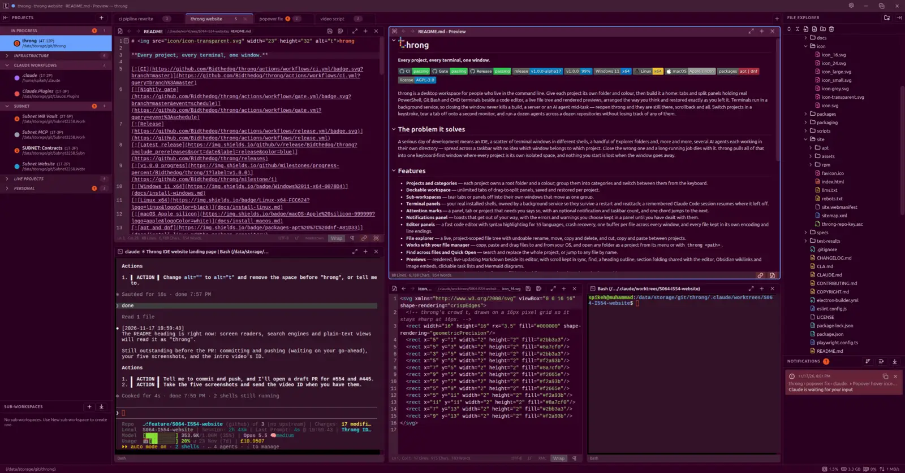
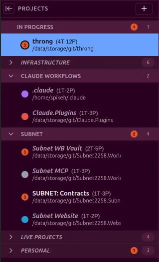
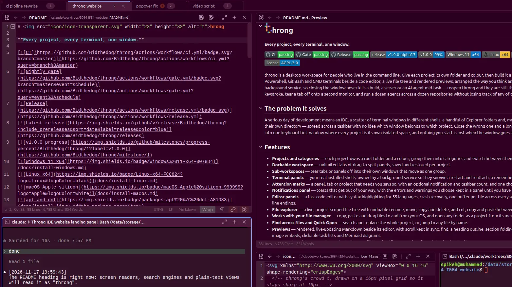
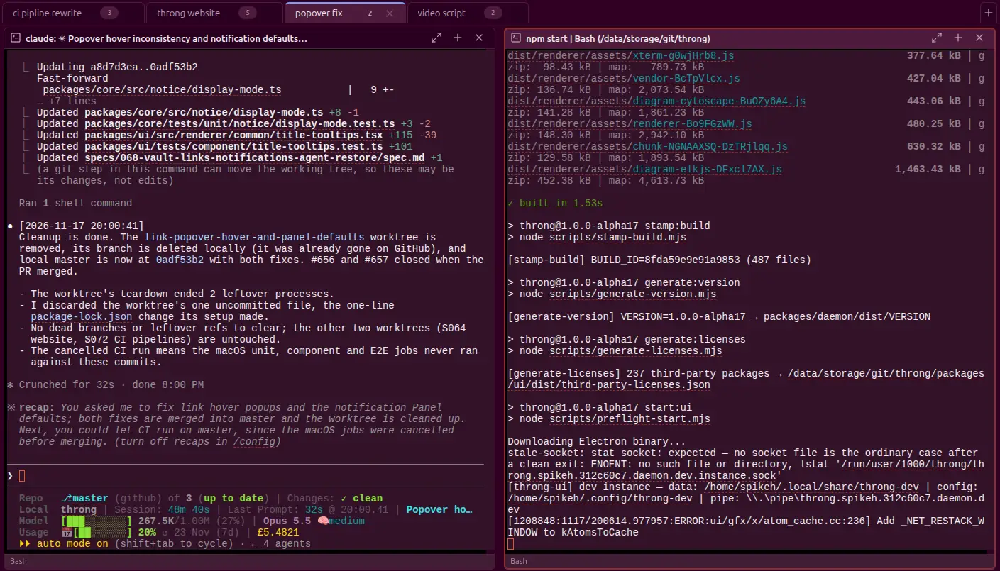
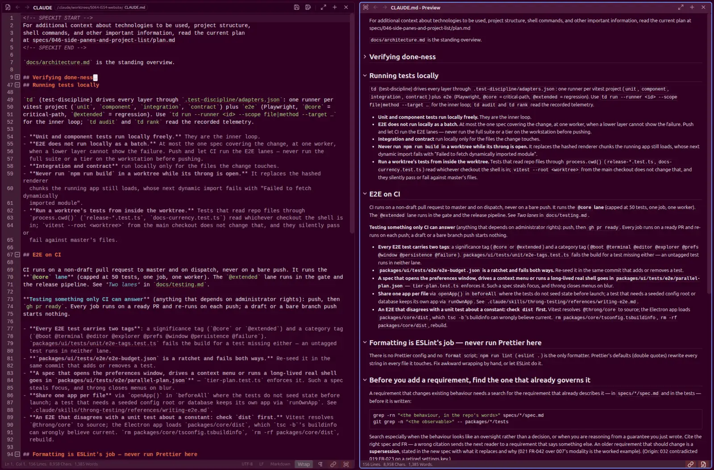

Every project, every terminal, one window.
A themeable desktop workspace for people who live in the command line. Each project gets its own folder, colour and layout of terminals, editors and previews, restored exactly as you left it.


Projects and workspaces
Each project owns a folder and a colour, and a workspace of tabs laid out the way you work. Group projects into categories and switch between them in a keystroke.

Panels
Drag to split any tab into terminals, editors and previews. Tear a tab or panel off onto a second monitor, and the windows move as one group.


Persistent terminals
Your real shells run in a background service. Close throng and builds, servers and AI agents keep going; reopen it and they are still there, scrollback and all.


Editor and Markdown previews
A fast editor with highlighting for 55 languages, one buffer per file across every window. Markdown renders live beside it, with scroll in sync, an outline, wikilinks and Mermaid diagrams.


Install throng
Windows 11, x64
- Download
throng-setup-<version>.exefrom the releases page. - Run it. If Windows warns about an unrecognised app, choose More info, then Run anyway.
- Choose Only for me, and open throng from the Start menu.
No administrator rights are needed. An MSI, a portable build and a zip are on the same page. Every Windows option
Ubuntu, Debian and relatives
wget -qO- https://throng-ide.com/throng-repo-key.asc | sudo tee /usr/share/keyrings/throng.asc > /dev/null
echo 'deb [signed-by=/usr/share/keyrings/throng.asc] mirror+https://throng-ide.com/apt/prerelease.list prerelease main' | sudo tee /etc/apt/sources.list.d/throng.list
sudo apt update
sudo apt install throngFedora and relatives
sudo curl -fsSL -o /etc/yum.repos.d/throng.repo https://throng-ide.com/rpm/throng-prerelease.repo
sudo dnf install throngUpgrades then arrive with your system updates. From 1.0.0, swap prerelease for stable to get full releases only.
Every Linux option
macOS, Apple silicon
- Download
throng-<version>-mac-arm64.dmgfrom the releases page. - Open it and drag throng into Applications.
- Open throng. macOS blocks the first launch, because the build is not notarised.
- In System Settings › Privacy & Security, choose Open Anyway. Later launches open straight away.
macOS support is best endeavours: the current and previous macOS releases on Apple silicon, tested by automated runs only. Bug reports are very welcome. Every macOS option
Help build it
throng is open source and built in the open. Report a bug, suggest a feature, or pick up an issue: the contributing guide explains how work is proposed, specced, built and reviewed.